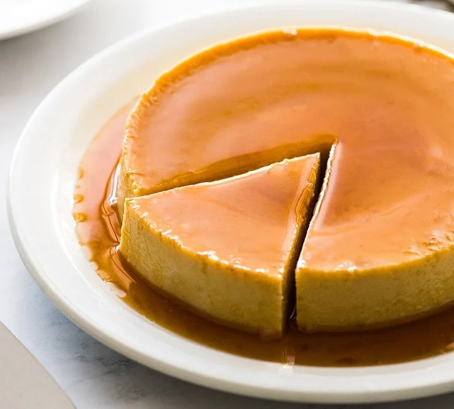

Back to Recipes
Flan

Flan is a traditional Spanish dessert made with eggs, sugar, and milk. It has a silky texture similar to custard and is topped with caramel.
Ingredients
- Whole milk, 500 ml
- Eggs, 4
- Sugar, 150 g (100 g for the corpus, 50 g for caramel)
- Vanilla extract, 1 teaspoon
Recipe
- Prepare the caramel by melting 50 g of sugar mixed with water in a pan until golden brown. Immediately pour it into the base of your flan mold.
- Heat the milk in a pot until warm (do not boil). Stir in vanilla extract.
- In a bowl, whisk together the eggs with 100 g sugar until smooth.
- Slowly pour the warm milk into the egg mixture while whisking to avoid curdling.
- Pour the mixture into the caramel-coated molds.
- Place the molds in a baking dish and fill the dish with hot water until halfway up the molds.
- Bake in a preheated oven at 160°C for about 50–60 minutes, until set.
- Put it into the fridge over night, then invert onto plates before serving.